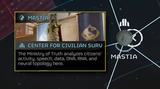

Galaxy Places of Interest

Galactic Point Of Interest for the Survelliance Center on the 星系战争地图
Galaxy Places of Interest are strategically 重要 assets marked on the 超级驱逐舰's 星系战争 map.
概述
The 星系战争地图 will 显示 the 位置 of strategically 重要 assets. These assets are 通常 added after select 主要命令.
All Galactic 兴趣点
- Center for 平民 监视 and Safety
- Center for the Confinement of Dissidence
- Center of Science
- Communications Array
- Conventional Black Hole
- DSS Logistics Hub
- Data Center
- Deep Mantle Forge 复杂
- Democracy Space 车站
- E-711 撤离 设施
- 工厂 Hub
- Fractured 行星
- 绝地潜兵 Training Facilities
- Jet Brigade Factories
- 最大 安全 City
- 最大 安全 City Construction Site
- Meridian Black Hole
- 负面 能量 实验室
- Pandora Base
- Regions
- 终结族控制系统+
- 终结族 研究 Preserve
- 暴政 Park 2
- Ultramafic Mine
- Void Gateway
- Xenoentomology Center
变更历史
补丁
描述
1.001.100
2024-09-17
(Mid-补丁)
The 星系战争地图 can now 显示 the 位置 of strategically 重要 assets. This will make it much easier for the 绝地潜兵 to take them into consideration when deciding on their 下一个 move.